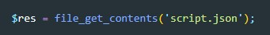
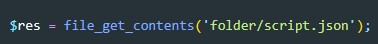
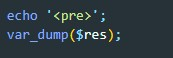
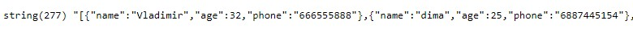
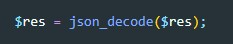
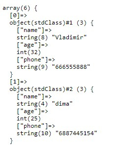
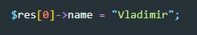
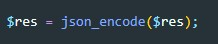
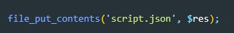

Для того что бы открыть и прочитать файл JSON используется функция file_get_contents()
Здесь мы создали переменную $res и поместили в нее результат функции file_get_contents(). Эта функция принимает в качестве аргумента строку, которая содержит путь до необходимого файла относительно файла php. если файл спрятан в какую-нибудь папку то (например folder) то эта же строчка выглядела бы уже вот так:
Теперь что бы вывести на экран содержимое переменной мы воспользуемся методом var_dump(), перед этим прописав echo '<pre>'; что бы данные были красиво распарсены
Вот что мы получили в результате:
Мы получили строку, но для работы с данными нам нужно получить массив. Для того что бы распарсить данные мы применим метод json_decod
Теперь если вывести на экран эту же переменную мы получим вот такой результат:
Для того что бы обращаться к ключам объекта, мы используем выражение ->. К примеру нам надо у первого елемента массива поменять значение ключа name. Вот как это будет выглядеть:
Перед тем как записать данные в JSON нам надо снова привести данные к строке. Делается это с помощью метода json_encode()
Для записи данных в файл мы будем испольовать метод file_put_contents(). Этот метод имеет два входных аргумента:
Первый - путь до файла JSON в который будет осуществляться запись
Второй - переменная данные которой запишутся в файл
Если по указанному пути файла не окажется, то он будет создан